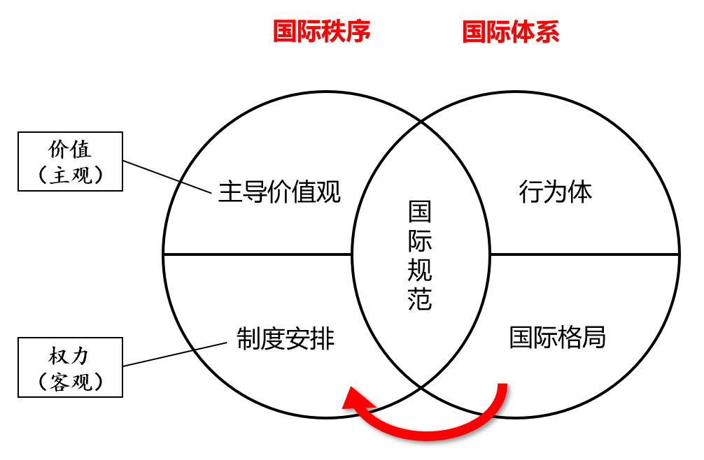
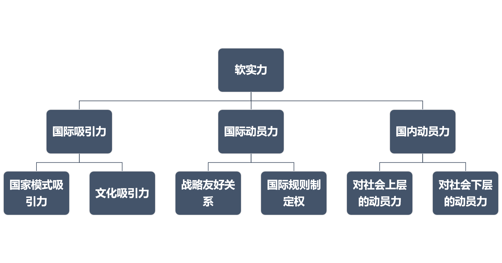

阎学通《国际关系分析（第三版）》（2017年9月）概念整理第一章 学科概况和研究方法§1 学科范畴§2 研究内容§3 国际关系学的主要流派§4 学习路径第二章 国际体系与国际秩序§1 国际体系三要素§2 国际秩序三要素§3 国际体系与国际秩序的区别§4 国际格局第三章 国际行为体和国家主权第四章 国家利益和民族认同§1 民族认同形成的社会条件§2 民族主义的形成原因第五章 综合国力与大国崛起§1 实力与权力§2 综合国力§3 大国崛起/世界中心转移第六章 国际安全与世界和平§1 和平与安全§2 国际安全困境§3 国际和平第七章 国际冲突与国际合作§1 国际合作§2 绝对收益和相对收益§3 积极合作与消极合作§4 全球治理§5 区域合作和区域（一体）化第八章 危机管理和对外决策§1 国际危机§2 决策与政策研究§3 政策分析的角度§4 国家类型、领导类型和对外战略取向第九章 国际军控和战略威慑§1 国际军控§2 战略威慑§3 外空和网络第十章 意识形态和宗教§1 意识形态对国际关系的影响§2 宗教与国际关系第十一章 国际组织与国际规范§1 联合国改革问题第十二章 国际经济关系和经济制度§1 经济相互依存的敏感性和脆弱性第十三章 国际关系预测方法和未来五年预测
| 内容 | 成果与目的 |
|---|---|
| 理论研究 | 学术论文和学术著作，论证规律 |
| 政策研究 | 政策报告，提出政策建议 |
| 国际时事评论 | 表达个人或组织的看法和立场 |
| 关注问题 | 核心变量 | 解决途径 | |
|---|---|---|---|
| 现实主义 | 安全、冲突 | 权力、国家利益 | 维持均势 |
| 自由主义 | 发展、合作 | 制度、共同利益 | 改善制度 |
| 建构主义 | 和谐、进化 | 观念、文化环境 | 改变观念 |
| 马克思主义 | 剥削、斗争 | 依附、阶级利益 | 改变国际秩序 |
国际主导价值观（international dominant values），常常是主导国的价值观
国际制度安排（international institutional arrangements）
国际规范，一国是否遵守取决于（1）利益（2）价值观

极（polarity）：国际体系中相互对立的主导力量。
国际格局两要素
不同格局下大国与中小国家的行为空间不同。
实力是物理概念，权力是关系概念。但 power 在英文中是双义的，存在一定程度的概念混乱。中文则不存在这个问题。
权力具有目标和手段的双重性质。国家有时将权力作为目标来争夺，有时以权力为手段扩大和维护国家利益。
国际权力由三个因素决定
权力不等于权威。国际权威需要靠不断地成功来赢得被领导国的信任。
综合国力（comprehensive national power）包括政治实力和军事实力、经济实力、文化实力。前者为操作性实力（operational power），后三者为资源性实力（resourceful power），政治实力会对资源性实力产生乘数放大作用，即3
综合国力的质量：实力要素的平衡度。定义式为 ，其中 为四个实力要素值的标准差。四种实力越接近，综合国力的质量越好。
实力要素的不可替代性（the irreplaceability of power elements）。不同实力要素发挥的功能不同，国家把一种实力要素转换成另一种需要花费较长的时间，因此四个实力要素在短期内不能互相替代。
政治实力是软实力的核心，中国提升软实力需要从政治实力入手4。

崛起不是一般的发展，崛起是新兴大国与霸权国之间相对实力差距的缩小和实力地位的换位。崛起通常是国际关系学研究的问题，核心内容是赶超霸权国。
结构性矛盾（structural conflict），与双方的国家战略无关，不因人的主观意志而转移。
新兴大国的崛起战略
| 概念 | 定义 |
|---|---|
| 和平 | 没有战争的客观状态 |
| 安全 | 利益受到保障的主观与客观相结合的状态 |
| 更多考虑相对收益 | 更多考虑绝对收益 | |
|---|---|---|
| 合作领域 | 高阶政治 | 低阶政治 |
| 合作对象 | 敌人 | 朋友 |
| 合作期限 | 长期 | 短期 |
积极合作（positive cooperation）：合作者共同应对第三方，如军事同盟。
消极合作（negative cooperation）或预防性合作（preventive cooperation）：应对合作者之间冲突的合作，如欧洲安全与合作组织。
敌对国家之间也可以达成积极合作5；友好国家之间也可以达成消极合作。
区域合作（regional cooperation）和区域化（regionalization）的根本区别在于，是否存在部分国家主权让渡给地区组织机构的现象。
区域合作的原因
大国的政治领导是区域合作成功的先决条件。
国际危机：高强度的、有可能引发战争的国际冲突事件。如 1962 年古巴导弹危机、2012 年钓鱼岛危机。
三个特征：
政治解决国际危机的几种方式
国际维和：为政治解决国际军事冲突提供条件，使冲突方和第三方有更多的时间和相对稳定的环境进行谈判、调解、斡旋。
影响决策正功率的因素
影响决策成功率的因素是复杂的，单一方面的发达并不能保证决策的成功。要对总体决策水平有更好的把握，多因素分析方法中必须融入历史感，即在一个组织、国家的兴衰周期中，多种因素的强势期不一致，使总的决策能力呈现一定的起伏规律。例如，霸主末世的研究积累一般基础雄厚、无人能敌，但一系列其他因素会腐蚀其作出成功决策的能力。新兴组织进行决策的制度安排可能不完善，但经历复杂斗争环境的领导者的决策能力可能非常高超。
国家目标
部门利益/官僚化分析（bureaucratic analysis）
组织行为分析
四种领导类型
领导人
| 无为 | 守成 | 主动 | 争斗 | |
|---|---|---|---|---|
| 主导国 | 绥靖 | 军事收缩、拼经济 | 集体干预 | 全面遏制 |
| 崛起国 | 放弃崛起 | 拓展全球经济合作 | 睦邻结盟 | 军事扩张、挑战禁脔 |
| 地区大国 | 防止外部介入 | 强化区域经济合作 | 地区同盟 | 地区扩张 |
| 小国 | 对外中立 | 不结盟 | 参加同盟 | 自我封闭 |
战略威慑（strategic deterrence）专指核威慑
确保核武库的足够规模和相互平衡是实现有效战略威慑的根本保障。相反，不审慎的核裁军行动非但不能带来和平，反而有可能成为诱发核战争的因素。
意识形态（ideology）：一组用来解释人类社会应当如何运作的观念和原则，并且提供了建设某种社会秩序的蓝图。
意识形态的功能
意识形态为国家利益披上了一层温情脉脉的面纱；但“政治正确”的泛滥可能导致意识形态原教旨主义，使国家利益受损。
意识形态因素在中国对外工作中的“回归”：中国总结“文革”教训，以及美国冷战后在全球推行民主价值观的教训，一度认将国家利益和意识形态对立起来，要求不以意识形态指导对外政策。但近年来，中国发现只讲国家利益无法在国际上提高道义感召力，不利于维护国家利益6。因此政府提出要建立核心价值观，意识形态对中国外交政策的影响力明显上升。
由于一神教在中国历史上没有占据主导地位7，绝大多数中国人对于宗教信仰的政治力量理解不深刻
宗教国家有其特殊理性，追求的目标与世俗国家有较大差异。
韩国与日本在二战后结下世仇，因此反对日本入常。意大利和德国都是二战的战败国，而且都被视为法西斯国家。德国入常意味着德国成为正常国家，而意大利仍要背负历史污名。因此意大利要求与德国同时入常。巴基斯坦与印度还处于全面军事对抗关系，因此担心印度入常后利用手中的权力打击巴基斯坦。智利担心巴西入常后成为南美的主导国，使自己失去目前与巴西平等的地位，因此宁可拉美没有常任理事国，也不能让巴西独自入常。埃及要求入常成为非洲的代表，但尼日利亚和南非都认为自己比埃及更能代表非洲。
——P289
所以，这真的不是一本正经地在讲笑话吗？(￣▽￣)~*
国际政治经济学（IPE）已经成为国际关系学中的一个独立的专业学科，有了成体系的理论和专业术语。
——P308
相对于世界上的绝大多数国家，包括绝大多数发达国家，我国在 IPE 方面的研究是比较先进的，但与美国相比还有较大差距。……我国 IPE 专业有巨大的发展潜力，值得青年学者进行研究。
——P331
敏感性（sensitivity）：一个国际经济事件对一国内部的影响速度
脆弱性（vulnerable）：一国受到国际经济冲击后所要付出的代价大小
反全球化运动